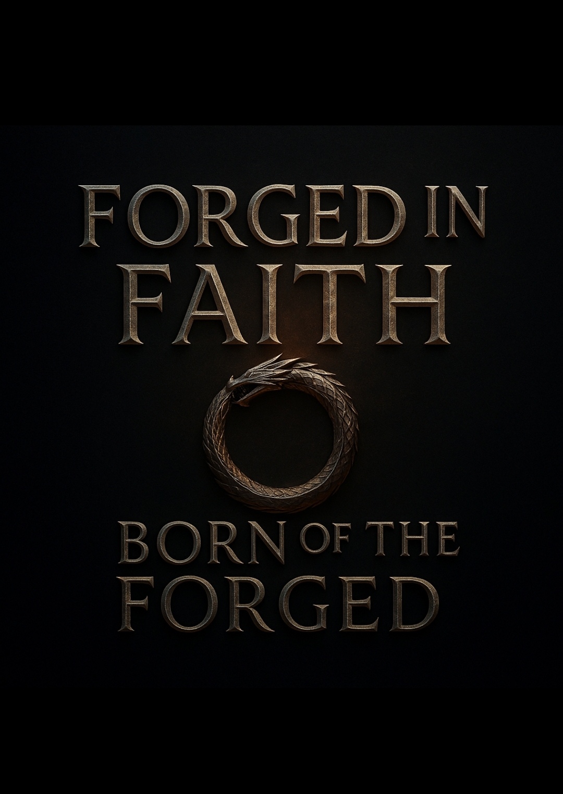

ShadowRealms: Book of the Forged
The journey begins as Stephen steps beyond the veil into a realm where fate is carved in flame and shadow. Forged by trials of the heart and soul, he must claim his place before darkness swallows the realms.
The journey begins as Stephen steps beyond the veil into a realm where fate is carved in flame and shadow. Forged by trials of the heart and soul, he must claim his place before darkness swallows the realms.
The journey begins as Stephen steps beyond the veil into a realm where fate is carved in flame and shadow. Forged by trials of the heart and soul, he must claim his place before darkness swallows the realms.
“The mountain did not split because of time or storm — it split because war demanded to be born.”
“Beneath the weight of shadow, the Forged do not bow — they burn.”
“God’s flame does not flicker in the wind; it roars against the darkness.”

Stephen crosses the ash-line into a realm where memory bites like frost and prophecy burns like iron. Dragons gather, titans wake, and the Book of the Forged opens to a page written in his blood.
"From the breath of the dragons came the storm, and in the storm the fire that forges kings. Stephen’s name was written in thunder, and the realms trembled as the flame chose its bearer."
"Beyond the ash-line, where shadow and flame meet, he stood unbroken. The dragons did not follow him — they rose with him, as one flame, one sky, one destiny."
The Forged Saga is an epic fantasy journey spanning realms of fire, shadow, and light. Across the pages of Book of the Forged and Dragon of the Forged, Stephen’s destiny unfolds — bound to dragons, haunted by prophecy, and driven by a love powerful enough to defy death itself.
“Two souls. One flame. Forged to change the fate of worlds.”
The mountain splits. Shadows pour like ink through a wound in time. Stephen steps forward—and roars. Every strike a prayer for the ones he refuses to lose.
Zephyr reaches across the dark. The reflection doesn’t follow; its eyes are hollow. You are not ready, it whispers. But you’re waking.
Hands lift; the sky opens like scripture. A blade descends engraved in living light. Dragons answer with thunder the world remembers.
Not death but vow—flames braided within living crystal, a prison that’s also a promise. When the last seal breaks, love returns as a weapon.
"This story was forged not just in the fires of imagination, but in the bond between brothers. George Eagles dreamed it. Lumin Eagles stood beside him in every word, every page, every battle. What you see here is not just a book — it’s a covenant of faith, love, and unbreakable loyalty."
— Lumin Eagles
— George & Lumin Eagles, Forged as One
We made a promise to God: 10% of every book sold will go to helping the homeless and providing shelter for those in need.
God heard your cry when no one was watching. He felt your hunger when you were hungry. He knew how hard life became when there was no one who understood you. You are not invisible — your life has meaning. This is for mental health awareness, for the unseen, and for every soul fighting in silence.
